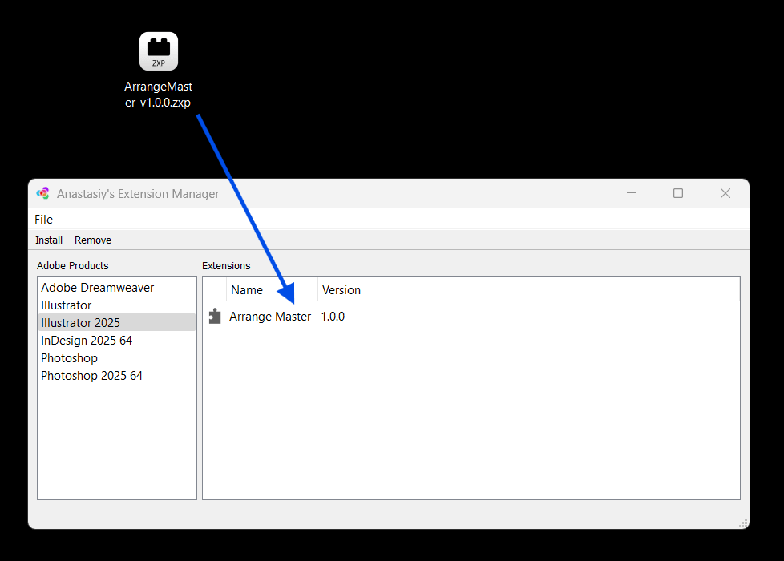
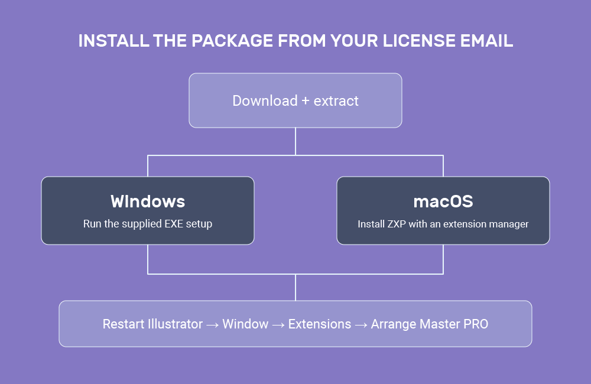
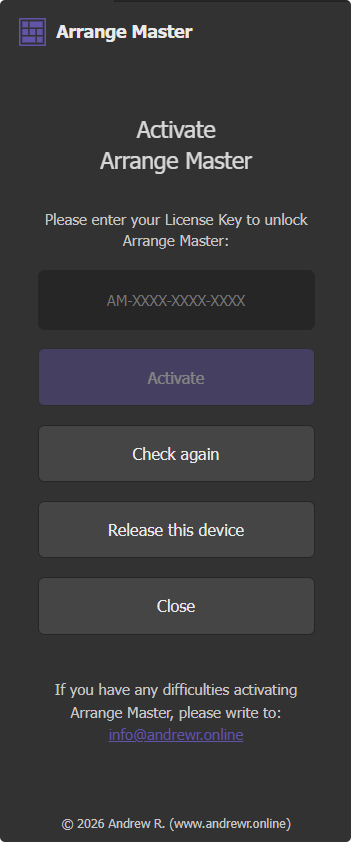
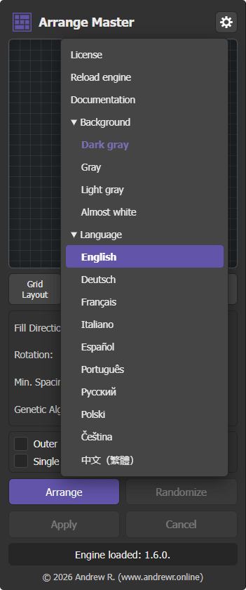
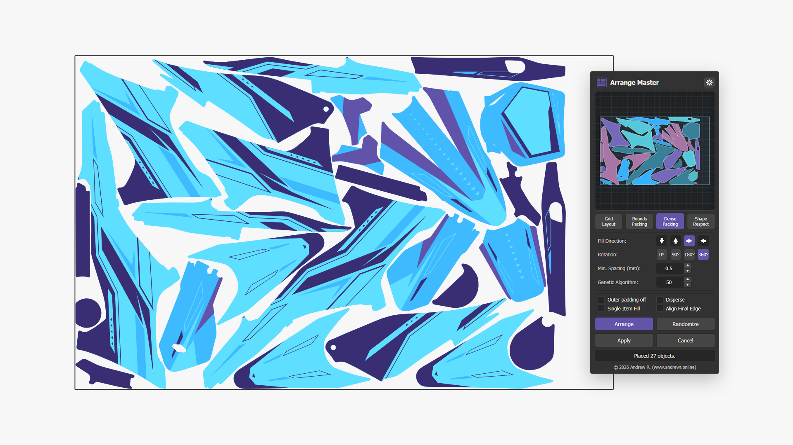
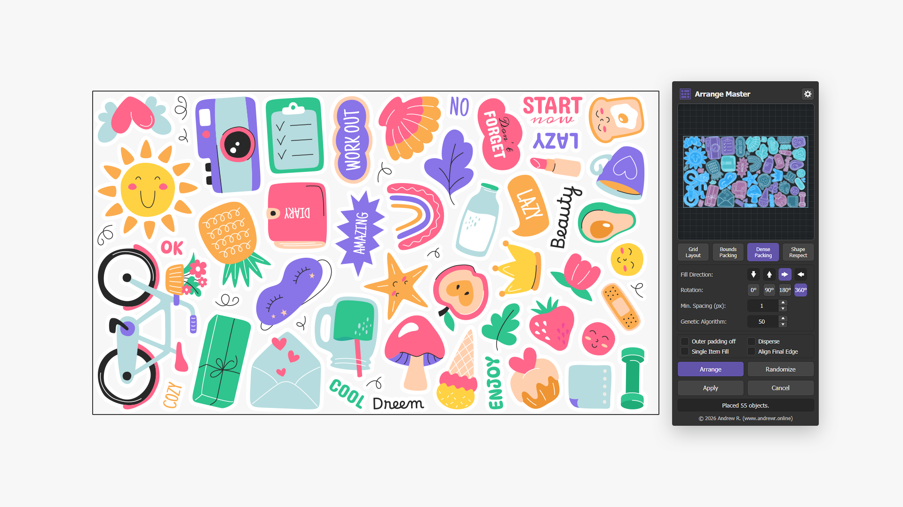
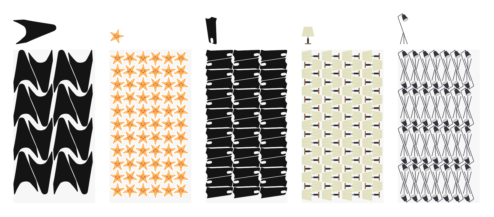
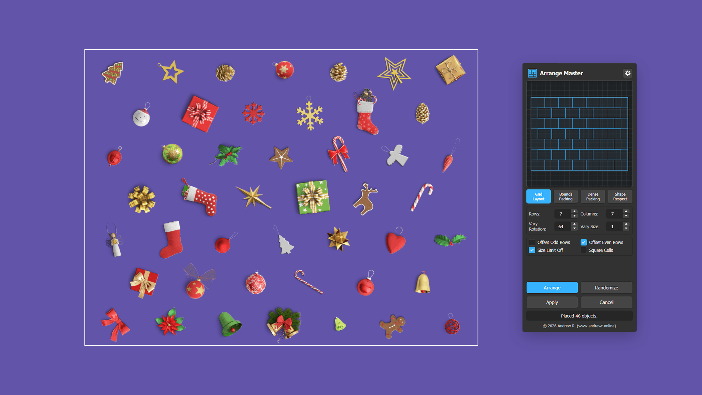
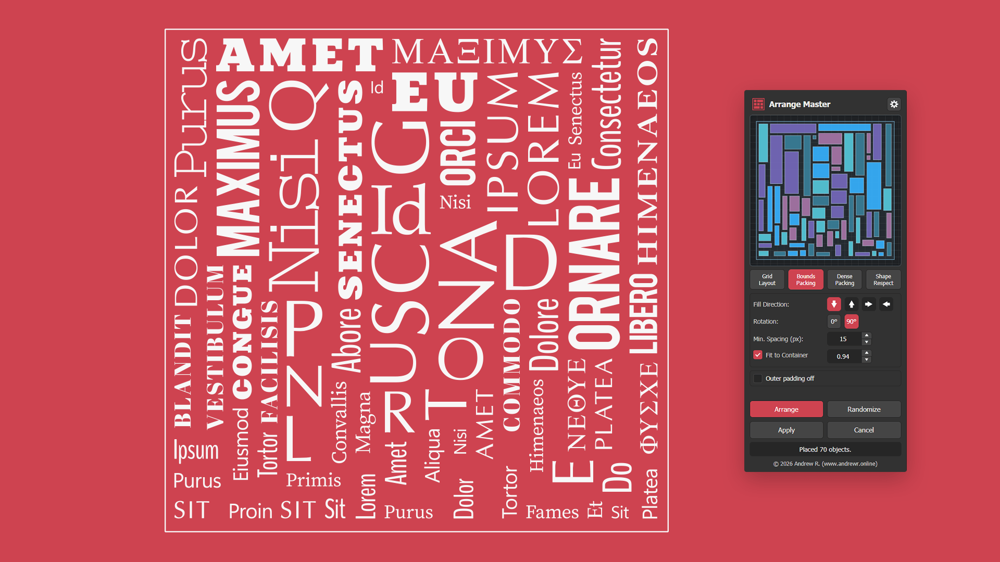

Arrange Master / User guide
Arrange Master
User guide.
Version 1.6.0 · Updated 16 October 2026 · By Andrew R.
This guide takes you through installation, activation, preparing artwork, choosing a layout method and keeping the result. Start with a saved copy of a real job, then use the preview to compare layouts before applying them.
System requirements
| Component | Minimum | Recommended |
|---|---|---|
| Illustrator | Adobe Illustrator CC 2018, version 22.0 or later | A current Illustrator release supported by your operating system |
| Windows | 64-bit Windows 10 or 11, Intel / AMD x64 | Windows 11 and a quad-core processor |
| macOS | A macOS version supported by your Illustrator release; use the supplied macOS package | Check the package and Illustrator compatibility for your Mac before installation |
| Memory | 8 GB RAM | 16 GB or more for large documents and detailed artwork |
| Display | 1280 × 800 | 1920 × 1080 or higher |
| Internet | Required for activation, license checks and downloading or reloading the engine. Keep the connection available throughout the 24-hour demo. | |
The panel includes support for the older CEP 8 and CEP 9 environments used by earlier Illustrator releases. The version range does not mean that every combination of Illustrator, macOS and hardware has been tested. Use the full 24-hour demo on the workstation you plan to use.
Installation
Download the ZIP from your license email and extract it before installing. Close Illustrator first, then choose the installation method for your operating system.
Windows: the supplied installer
- Open the extracted Windows Install folder.
- Run the Arrange Master setup file supplied in the download.
- Follow its instructions. Keep the installation files together rather than moving individual panel files.
- Restart Illustrator when installation is complete.
macOS and ZXP installation
Use an extension manager to install the supplied
ArrangeMaster.zxp
.
Anastasiy’s Extension Manager
is one option;
ZXPInstaller
is an alternative.
- Install and open your extension manager.
-
Drag
ArrangeMaster.zxpinto its window, or use its Install command. - Allow installation to finish, then restart Illustrator.


Opening and docking the panel
In Illustrator, choose Window → Extensions → Arrange Master . Dock the panel where it is comfortable to use, then give it enough height to show the preview, settings and bottom action buttons. Drag its edge to adjust its width.


If the panel does not appear, confirm that the package was installed for Illustrator and restart the application. See Troubleshooting if it is still missing or opens blank.
Updating and complete uninstallation
Before an update
Finish the active arrangement with Apply or Cancel , save the document and close Illustrator. When replacing an older major version, remove its panel package before installing 1.6.0. This avoids keeping conflicting copies in different extension folders.
Keep your license email. Existing purchasers retain their registered license key and device entitlement; an update does not require a new purchase. Version 1.6.0 uses its own engine download, so install the complete 1.6.0 panel package rather than copying an engine file into a 1.5.0 installation.
Panel updates and engine updates
Install a new panel package when an update changes the interface or installation files. To fetch the latest engine supported by the installed panel, finish your session and choose Settings → Reload engine with an internet connection available. The status bar confirms the loaded engine version. Do not reload the engine during an active arrangement.
Remove a Windows installation
- If you are moving the license to another computer, first open Settings → License → Release this device .
- Close Illustrator.
- Open Windows Settings → Apps → Installed apps , find Arrange Master and choose Uninstall . You can also use the supplied uninstaller.
Remove a ZXP installation
In an extension manager that supports removal, select Arrange Master under Illustrator and choose Remove . If the manager only installs ZXP packages, remove the extension folder manually.
Manual cleanup if the panel remains installed
With Illustrator closed, look for the folder named
com.andrewrybalko.arrangemaster
in the following locations. Remove only that folder. Keep other
Adobe extensions and the separate Arrange Master PRO folder.
- Windows — user
%APPDATA%\Adobe\CEP\extensions\- Windows — shared
-
C:\Program Files (x86)\Common Files\Adobe\CEP\extensions\ - macOS — user
-
~/Library/Application Support/Adobe/CEP/extensions/ - macOS — shared
-
/Library/Application Support/Adobe/CEP/extensions/
Use Finder’s Go → Go to Folder on macOS, or paste the Windows user path into File Explorer. Check both user and shared locations if an old copy keeps appearing.
Removing the extension does not release its activation on the server. Use Release this device before uninstalling when you need that slot on another computer. Reinstalling does not restart a demo. If you no longer have access to an activated computer, contact info@andrewr.online .
Remove saved settings and the panel cache
For a clean reinstall, close every Illustrator instance after
releasing the device. To reset the saved background and
language, remove
%APPDATA%\ArrangeMaster\preferences.json
on Windows or
~/Library/Application Support/ArrangeMaster/preferences.json
on macOS.
To remove the panel’s downloaded cache as well, remove only the
Arrange Master entry in Adobe’s
cep_cache
: its folder name ends in
com.andrewrybalko.arrangemaster.panel
and starts with the Illustrator version. On Windows, look under
%LOCALAPPDATA%\Temp\cep_cache\
. If several Illustrator versions were used, each may have its
own entry. Keep other extensions’ cache folders. Removing local
settings or cache does not release a device or renew a trial.
Activation and your lifetime license
The full 24-hour demo and the paid version use the same panel and features. Activate with the AM-… key from your email, rather than an order number or payment reference.


Request the demo
- Open the demo request page .
- Complete the form with an email address you can access and submit the request.
- Find the license email, including in Spam or Junk, and download the supplied package.
- Install the plugin, open it in Illustrator, paste the key and click Activate .
The 24-hour period starts at the first successful activation, not when you request the key, receive the email or download the archive. The demo unlocks every Arrange Master feature on one computer. Reinstalling or releasing the computer does not create another demo period.
Activate a paid license
Open the panel with an internet connection, paste your complete license key and click Activate . Wait until the main controls appear and the status bar confirms that the engine has loaded.
Arrange Master is a one-time purchase with a lifetime license , without a recurring subscription. Personal allows 1 activated computer, Team 4 , and Extended Commercial 10 . All three include the same arrangement methods.
Move from the demo to the full version
Purchase with the same email address used for the demo so your existing key can receive the paid entitlement. Keep the same panel installed. After the purchase is registered, open Settings → License and choose Check again . You can also enter the key and click Activate again.
Payment registration may take a short time. If the purchase email contains a different key, enter that key instead. If the paid status still does not appear, contact support with both the demo email address and payment receipt.
Use the License window
Finish the active session before opening Settings → License .
- License key: The field for your current key or a replacement key.
- Activate: Checks the entered key and activates this computer if the license has an available slot.
- Check again: Checks the saved activation again without requiring the key to be entered. Use it after a purchase has been registered or after resolving a connection problem.
- Release this device: Removes this computer’s activation and frees its device slot. Use this before moving a paid license to another computer. It does not erase the computer’s demo history.
- Close: Returns to the panel without changing the activation.
Keep internet access available for license checks and engine updates. If activation fails, check the exact error, the entered key and the license’s available device slots. Do not disable security software or change unrelated Illustrator settings to work around a license error.
The basic idea
Select the artwork you want to arrange and one object to define the available space. Arrange Master identifies the largest selected object by its bounding area as the container and treats the rest as items to place.
The container is an Illustrator object, not simply the active artboard. Create a rectangle when you need a sheet or roll area. Choose Shape Respect when the container has an outline you need to follow.
- Objects: anything that must move as one piece should be grouped as one item, or prepared as aligned components across layers.
- Container: the largest selected object sets the available area. Leave unrelated artwork out of the selection.
- Method: choose a grid, rectangular bounds, closely packed shapes or a custom container outline.
- Session: compare arrangements using working copies, then deliberately finish with Apply or Cancel.
Arrange Master works with one container per session. If you want automatic creation of additional containers and a continuous workflow across multiple sheets , choose Arrange Master PRO .
Meet the panel

- Header and Settings: the gear button opens the License window, engine reload, documentation, background and language options.
- Preview: shows the current layout and improvements during optimization. The idle screen displays the logo animation and “Stand by…”.
- Method buttons: Grid Layout, Bounds Packing, Dense Packing and Shape Respect select the settings shown below.
- Settings: only the selected method’s controls are displayed. Hover over a control for a short explanation.
- Action buttons and status: Arrange starts or repeats a calculation, Randomize tries another order, Apply keeps the result, and Cancel restores the originals. The status bar shows progress, placed-object counts and any error message.
Background and language


Open the gear menu and choose Background to select Dark gray, Gray, Light gray or Almost white. Dark gray is the default. Each method keeps its own accent: blue for Grid, red for Bounds Packing, violet for Dense Packing and orange for Shape Respect.
Choose Language to change the panel and its tooltips. The available languages are English, German, French, Italian, Spanish, Portuguese, Russian, Polish, Czech and Traditional Chinese. Your background and language are remembered after restarting the panel.
The panel uses a consistent text size so changes to Adobe’s system-dependent font size do not rearrange its controls. Resize the panel if you need more room; the preview adjusts with it.
Read the preview
The preview is a visual guide to placement, with a container outline, background grid and colored item shapes. It shows packing shapes rather than a full print-color proof. Inspect the actual artwork in Illustrator before production.
While Dense Packing or Shape Respect is optimizing, the preview updates as new layouts are found. Several steps may keep the same visible result when no better layout is found. The status bar continues to show the search progress.
Selecting Grid Layout displays a draft of the grid, including row offsets and square cells. During an active session, switching back to Bounds Packing, Dense Packing or Shape Respect restores the last arrangement preview. While a calculation is running, its progress view takes priority.
After either Apply or Cancel, the previous arrangement is cleared from the preview and “Stand by…” returns. Selecting Grid again displays its draft.
Prepare artwork and layers
Arrange Master 1.6.0 supports mixed selections of paths, compound paths, groups, text, symbols, clipping groups, linked or embedded images, and opacity masks.
Vectors use outlines; raster images use rectangular bounds, including transparent pixels. Clipping masks can define visible boundaries. Prepare and verify exact production contours.
One item, one piece
- Group each item with its text, marks and details.
- Resolve missing image links; remove stray points, duplicates and hidden parts that obscure boundaries.
- Save before large runs; test unfamiliar artwork on a small representative selection.
Choose the container
Grid, Bounds Packing and Dense Packing use rectangular bounds; use a rectangle for a sheet. Shape Respect follows usable outlines, holes and separate regions in paths, compound paths, groups and clipping groups; image-only containers use rectangles.
The container must have the largest bounding area; exclude accidental backgrounds and large hidden components. The plugin tightens and aligns the result automatically.
Multilayer production files

Keep production components on separate layers:
- Align each item’s components directly above one another.
- Keep cut lines within corresponding print artwork bounds.
- Group each item’s print artwork or use a clipping mask; separate neighboring items.
- Select related components and container together; keep required layers visible and editable.
Aligned components move together; Apply/Cancel restores layer placement. Check registration and stacking order before output.
Clipping masks and opacity masks
Clipping masks hide outside artwork; opacity masks control transparency. Complex masks take longer to prepare and transform.
Save frequently, keep Illustrator active, avoid switching apps, and wait until preparation and transformations finish before editing.
Arrange, compare, then finish the session
1. Save, select and start
Save your file. For complex projects with many objects, clipping masks and multiple layers, keep only one document open in Illustrator to reduce memory pressure and the risk of errors or crashes.
Select the items and container, choose a method, spacing and allowed rotations, then click Arrange. The session preserves the originals and uses working copies for the layout.
2. Review and compare
Follow the status bar and best layout in the preview. Wait for preparation, calculation and transformations to finish before editing. Changing settings or methods keeps the session open: click Arrange to recalculate, or Randomize to try another item order with the current settings.
While idle, zoom or pan to inspect the result, or resize the container and arrange again. Finish the session and start a new one before changing item artwork or selecting a different collection.
3. Always finish with Apply or Cancel
Apply keeps the arrangement and ends the session. Cancel restores the originals and ends it.
To stop a running calculation, click Cancel once. Wait through “Stopping…”; preparation or transformations may need to finish first.
Finish before switching documents, reloading the engine, changing the license, closing the panel or quitting Illustrator. If a session warning appears in another document, return to the original document and finish there. Closing a document does not finish its session.
Choose a layout method
The four buttons below the preview open different workflows. Grid Layout builds an even arrangement; Bounds Packing uses rectangular item bounds; Dense Packing brings shapes close together inside a rectangle; Shape Respect fills a custom outline.
Dense Packing
Use Dense Packing for a compact layout inside a rectangular container. It considers object outlines so neighboring pieces can fit into one another’s empty spaces. Raster items use their rectangular bounds. This is the default method when the panel opens.


Start with the required material spacing and rotation limits, then click Arrange. Watch the preview as the layout improves. Inspect the resulting artwork before applying it.

- Fill Direction: Choose top to bottom, bottom to top, left to right or right to left. This sets the edge from which the layout fills. It does not remove the restrictions you set under Rotation.
- Rotation — 0°: Keeps each item’s current orientation.
- Rotation — 90°: Allows quarter-turn orientations: 0°, 90°, 180° and 270°.
- Rotation — 180°: Allows the current orientation and an upside-down turn. Use it when quarter turns are unsuitable for the design or material.
- Rotation — 360°: Allows a wider range of rotation angles for a closer fit. Use it only when the artwork and material can rotate freely.
- Min. Spacing: Sets the minimum gap in the current document’s ruler units. The same gap is normally reserved at the container edge. Enter a value or use the arrows.
- Genetic Algorithm: Sets the optimization effort from 1 to 50 steps. More steps give the plugin more opportunities to improve the layout and take longer. They do not guarantee that every run will fit more objects.
- Outer padding off: Removes the gap at the container boundary while retaining the spacing between items.
- Single Item Fill: Fills the container with copies of one selected item. Select exactly one source item and the container. See the instructions below.
- Disperse: Spreads selected items more evenly across the rectangle instead of packing them toward one edge. Min. Spacing and allowed rotations still apply. See Disperse for the workflow and related controls.
- Align Final Edge: Spreads the layout toward its finishing edge in the selected Fill Direction. Related neighboring pieces move together, like opening an accordion, rather than stretching the artwork itself. Use it when an even final edge is more useful than the shortest possible strip.
A useful starting point: try 1–3 optimization steps, inspect the result, then increase the value if additional packing effort is worthwhile. Compare another direction or permitted rotation when a layout stops improving. More computation cannot make an oversized part fit inside a smaller boundary.
Spacing values step in whole document units above 1 and in progressively smaller fractions below 1, down to 0.001 . A dot or comma can be used as the decimal separator. Verify the unit label before entering production clearances.


Single Item Fill
This option is available in Dense Packing and Shape Respect. It makes repeated copies of one source item rather than arranging a selection of different designs.

- Group everything that must repeat as one item.
- Select that one item and the container.
- Choose Dense Packing for a rectangle, or Shape Respect for a custom outline.
- Enable Single Item Fill , set spacing and allowed rotations, then click Arrange.
- Check the number of copies, their clearance and the edge of the layout. Choose Apply to keep them or Cancel to restore the original.
The result may be aligned, staggered or interlocking depending on the source shape. Copies that do not fit are not kept as extra overflow copies. Turn Single Item Fill off before starting a job with several different items.
Single Item Fill and Disperse cannot be used together. Enabling Single Item Fill disables Disperse and the Genetic Algorithm control; the repeat-filling workflow does not use that optimization setting.


Disperse
Disperse distributes selected objects across the usable area of a container, refining their positions to leave more even space between them. Use it for scattered motifs, decorative illustrations, collages or artwork spread inside lettering. Choose ordinary packing when the goal is a compact layout that uses the least material.

The same setting is available in Dense Packing and Shape Respect. Dense Packing uses a rectangular container; Shape Respect follows a custom outline, including holes and separate regions. Disperse moves the objects you selected. It does not create repeated copies.
Arrange with Disperse
- Group the parts of each design that should move together. Select the items and their container.
- Choose Dense Packing for a rectangle or Shape Respect for a custom boundary, then enable Disperse.
- Set Min. Spacing in the displayed document units and choose the permitted rotations. Use 0° to keep the original orientations, or 360° when free rotation suits the artwork.
- Click Arrange. Watch the preview as objects move apart and the distribution is refined.
- Inspect the result and any items in Overflow. Change spacing and run Arrange again if needed. Apply keeps the layout; Cancel restores the original positions.
Disperse aims for a balanced, natural distribution rather than a regular grid or identical distances everywhere. Different item sizes, narrow corners, holes and separate container regions affect the available positions. Compare another run with Randomize, or adjust spacing to suit the composition.

Grid Layout
Arrange items in rows and columns, centered in individual cells. Use it for icon sheets, stock illustration sets, catalogs or compositions that need consistent visual spacing.

- Rows and Columns: Set the number of cells, from 1 to 500 in each direction. More rows or columns make smaller cells in the same container.
- Vary Rotation: Applies random rotation within the entered angle on either side of the original orientation. For example, 30° allows turns between −30° and +30°. Set 0 to preserve orientation.
- Vary Size: Varies the item sizes at random. A value of 1 leaves size unchanged; 2 allows sizes between the original size and twice that size. This changes the artwork size, so leave it at 1 for dimension-critical production.
- Offset Odd Rows: Shifts the first, third and other odd rows horizontally by half a cell. The last cell of each shifted row is omitted so its center stays within the grid.
- Offset Even Rows: Applies the half-cell shift to the second, fourth and other even rows. Choose either odd or even rows.
- Size Limit Off: Allows an item that is larger than a cell to occupy that cell. It may extend into neighboring cells or past the container; inspect the result for overlaps. With this option off, oversized items go to Overflow.
- Square Cells: Uses equal cell width and height and centers the resulting grid inside the container. A rectangular container may then have extra unused space at two sides.
Grid Layout does not automatically make an item small enough for its cell. Reduce the number of rows or columns, enlarge the container or deliberately resize the source artwork if objects are too large.
Randomize changes the item order. The Single Item Fill option from older Grid panels is now available under Dense Packing and Shape Respect instead.


Bounds Packing
Pack items using the rectangles around them. This is useful for rectangular artwork, images, product collections and layouts that should keep clear space around every item. Empty space inside an irregular outline is treated as part of its rectangle.

- Fill Direction: Choose one of four directions to determine the starting edge and placement flow.
- Rotation: 0° preserves orientation; 90° allows quarter turns. These are the two rotation choices in Bounds Packing.
- Min. Spacing: Sets the gap between item rectangles in the document’s current ruler units. Unless Outer padding off is enabled, it also reserves space at the container edge.
- Fit to Container: Resizes all items by the same proportion before packing them. This may enlarge or reduce the artwork, so leave it off when exact dimensions must be preserved.
- Efficiency: The number next to Fit to Container, from 0.75 to 1.00, controls how much of the container the resized collection aims to occupy. A lower value leaves more room; a higher value aims for a fuller layout but may leave items unplaced. It is a sizing guide, not a promise that every item will fit.
- Outer padding off: Allows item rectangles to reach the container boundary while keeping the gap between items.
If an irregular set looks too loose, try Dense Packing to use the actual vector outlines. If all dimensions must remain unchanged, verify that Fit to Container is off before running Arrange.


Shape Respect
Pack objects inside a container of any supported shape, including an outlined letter, a logo, a compound shape with holes or a group with separate regions. The usable outline determines where items can go; the container’s holes stay empty.

Shape Respect uses the same shape-packing workflow as Dense Packing. There is no separate Dense Packing checkbox or older accurate-mode switch.
- Fill Direction: Chooses the starting edge: top, bottom, left or right.
- Rotation: Choose 0°, 90°, 180° or 360° using the same orientation rules as Dense Packing.
- Min. Spacing: Sets the gap between items and, unless disabled, the clearance from the custom container boundary.
- Genetic Algorithm: Controls optimization effort from 1 to 50 steps. Increase it when a closer fit is worth a longer search.
- Outer padding off: Removes the boundary clearance, including along the edges of holes, while retaining item-to-item spacing.
- Single Item Fill: Repeats one source item throughout the usable shape. Select just the source and the container.
- Disperse: Spreads selected items more evenly throughout the usable shape, leaving holes empty. Min. Spacing and allowed rotations still apply. See Disperse for the workflow and related controls.
Grouping alone is not a reason to ungroup the container. If its outline is read unexpectedly, remove stray or unrelated parts and check the intended holes and clipping boundary. Simplify a problematic container when helpful, but keep a copy of the original.
For a dense composition with a fixed outline, compare several runs. For an airy decorative result, combine a larger spacing with Disperse and inspect the overall balance.

Overflow: items that do not fit
An unplaced item is not silently discarded. In ordinary multi-item jobs, Arrange Master moves it to an organized block above the container , so you can see what remains.
The overflow block groups items into rows that wrap to the width of the container. A particularly wide item may extend beyond that width. Leave free workspace above your container before beginning.
- To fit more items: enlarge the container, allow suitable rotations or lower spacing only when production requirements permit it.
- For irregular pieces: compare Dense Packing with Bounds Packing.
- In Grid Layout: check the cell count and whether an item is too large for a cell. Size Limit Off may allow it to extend beyond its cell, so inspect for overlaps.
- To use another sheet manually: Apply the completed layout, select the remaining items and another container, then start a new session.
Single Item Fill behaves differently: trial copies that do not fit are removed, leaving the placed copies. For automatic additional containers and a workflow that continues from one sheet to the next, see Arrange Master PRO .
Best practices and troubleshooting
Before printing or cutting
- Save your document before a demanding job.
- Check the container, selected method and displayed units.
- Set rotations to suit the design, fabric direction, grain or print orientation.
- Keep Fit to Container and Vary Size off when source dimensions must stay unchanged.
- Turn Single Item Fill off when arranging different items.
- Inspect the actual Illustrator artwork, especially small clearances, clipping and opacity masks, text, strokes and registration between layers.
- Apply or Cancel, then save the finished document.
The panel is missing from the menu
- Quit Illustrator completely after installation, then open it again.
- Look under Window → Extensions or Window → Extensions (Legacy) , depending on your Illustrator version.
- If you have several Illustrator versions, confirm that the extension manager installed Arrange Master for the version you are opening.
- Check both the user and shared CEP extension folders listed in the installation section. Keep one current Arrange Master installation; move an older duplicate out of those folders while Illustrator is closed.
- On Windows, run the supplied Arrange Master setup again. On macOS, reinstall the complete supplied package with your extension manager and check its installation result.
If you installed an unpacked folder manually, check the CEP setting below. A correctly signed ZXP package does not normally require PlayerDebugMode.
The panel opens but stays blank
Close Illustrator before changing installation files or CEP preferences. Start with the Windows or macOS steps below. If the panel previously worked and became blank after an update, also try the panel-cache reset.
Windows: repair a manual installation
- First try the supplied Windows setup. It applies the installation settings for the plugin.
-
For an unsigned, manually installed copy, press
Win + R
, enter
regeditand open Registry Editor. -
Go to
HKEY_CURRENT_USER\Software\Adobe\CSXS.12for CEP 12. Use the matching number for your CEP runtime, as explained below. Create the key if it is missing. -
In that key, create a
String Value
named
PlayerDebugMode. Set its value to1. It must be a string, not a DWORD. - Close Registry Editor, restart Illustrator and open Arrange Master again.
You can also use Notepad to create the following registry file. This example is for CEP 12:
Windows Registry Editor Version 5.00
[HKEY_CURRENT_USER\Software\Adobe\CSXS.12]
"PlayerDebugMode"="1"
Save it as
ArrangeMaster-CEP-fix.reg
with
Save as type → All Files
, so the filename does not end in
.txt
. Double-click the file, confirm the registry import and restart
Illustrator.
macOS: repair a manual installation
- Quit Illustrator. Press Command + Space , search for Terminal and open it.
-
For an unsigned manual installation using CEP 12, run the
commands below. Replace
12with your CEP version when necessary.
defaults write com.adobe.CSXS.12 PlayerDebugMode 1
killall -u "$(whoami)" cfprefsdPlayerDebugMode allows unsigned CEP extensions to load. Use it for the official manual-install package; it is not a fix for a rejected activation key.
If macOS reports that the official downloaded package is blocked, follow the approval steps in System Settings → Privacy & Security . Apple's instructions for opening a downloaded app explain the available prompts.
If the installed Arrange Master folder has a quarantine flag, remove that flag from this folder. For a per-user installation, run:
xattr -dr com.apple.quarantine "$HOME/Library/Application Support/Adobe/CEP/extensions/com.andrewrybalko.arrangemaster"For an installation in the shared Library folder, use this path instead:
sudo xattr -dr com.apple.quarantine "/Library/Application Support/Adobe/CEP/extensions/com.andrewrybalko.arrangemaster"
Use the actual Arrange Master folder name if your package was
installed under a different name. Enter your Mac login password
if
sudo
requests it; Terminal does not display password characters.
If the error is about folder permissions, select the Arrange Master folder in Finder, choose File → Get Info → Sharing & Permissions , and check that your account can read its files. For a manually copied folder in your own Library, this command restores your account's access to that folder and its contents:
chmod -R u+rwX "$HOME/Library/Application Support/Adobe/CEP/extensions/com.andrewrybalko.arrangemaster"Restart Illustrator after these changes. If an older Illustrator works but a newer one stays blank, reinstall the complete current package before considering a rollback. Include both Illustrator version numbers when contacting support.
Which CSXS number should I use?
The number identifies the CEP runtime, not the Illustrator year.
Adobe lists Illustrator 23/24 with CEP 9, 25.0 with CEP 10, 25.3
with CEP 11 and 29.5.1 with CEP 12. CEP 8/9 installations need
CSXS.8
/
CSXS.9
, not
CSXS.12
. See Adobe's
CEP version reference
when checking an older host.
If you cannot identify the runtime, send support your exact Illustrator version and the latest CEP log filename. Do not apply registry files intended for an unrelated application.
Reset only the Arrange Master panel cache
- Finish any active session, save your work and quit Illustrator. Have your activation key available: the engine will need to download again, and the panel may ask for the key.
-
On Windows, press
Win + R
, paste
%TEMP%\cep_cacheand press Enter. -
On macOS, use
Finder → Go → Go to Folder
and enter
~/Library/Caches/CSXS/cep_cache/. Older CEP versions may use~/Library/Logs/CSXS/cep_cache/. -
Find the folder for this panel and Illustrator version. Its
name contains
ILSTandcom.andrewrybalko.arrangemaster.panel, for exampleILST_30.8.2_com.andrewrybalko.arrangemaster.panel. -
Rename that folder by adding
.backupto its name. Leave the caches of other Adobe extensions in place. - Restart Illustrator, open Arrange Master and let it load with an internet connection. Re-enter your key if requested.
Keep the backup until the panel works again. If you need to restore it, close Illustrator first, move the newly created panel cache aside and restore the original folder name.
A key is rejected
- Open Settings → License . Copy the complete Arrange Master key from the email, without leading or trailing spaces.
- Use the ordinary Arrange Master key. A PRO key, payment reference or email address is not an activation key for this product.
- Read the actual message. An expired 24-hour trial and a device-limit message require different actions.
- For a device limit, release the activation on a computer you no longer use. If that computer is unavailable, contact support with the purchase email.
- If the error describes a connection failure, follow the network steps below before entering another key.
Reinstalling does not restart the 24-hour trial. If a purchase made with the trial email is not reflected in the license screen, refresh its status and include the payment confirmation in your support request.
Activation or engine loading cannot connect
- Check the computer's date and time. Then confirm that your internet connection works and that no browser sign-in page is waiting for Wi-Fi access.
- If you use a VPN or proxy, test activation once with it enabled and once without it. In clients such as Clash, V2Ray or NekoBox, a system-proxy switch may leave Illustrator traffic outside the proxy. Test the client's TUN or Global mode when application routing is the problem.
-
For
ECONNREFUSED, check that the proxy is running and listening on the configured address and port. A stopped local proxy can refuse the connection even while the browser uses another route. - Try the same operation over a mobile hotspot. If it works there, check the original network, VPN routing and security rules rather than reinstalling repeatedly.
-
On Windows, press
Win + R
, enter
wf.mscand inspect Outbound Rules forIllustrator.exeandCEPHtmlEngine.exe. Review a matching block or ask the network administrator to allow those installed applications to make HTTPS connections. - In third-party security software, open its application-control or web-protection history. Check for a blocked Illustrator or CEP connection and allow that specific operation when it belongs to your official installation.
- After changing the connection, retry activation or Settings → Reload engine and wait for the result in the status bar.
If an error includes an IPv6 address, compare the result on another connection; the address alone does not establish the cause. For an IPv6-specific routing problem, Microsoft's networking guidance recommends preferring IPv4 rather than disabling IPv6 across Windows.
For
503 / SERVICE_UNAVAILABLE
, wait briefly and retry once. If it repeats, send the full
message, the time of the attempt and whether a VPN was active.
This information helps distinguish a service failure from a
local connection problem.
The engine does not load after activation
- Finish the current arrangement with Apply or Cancel .
- Keep Illustrator connected to the internet and choose Settings → Reload engine .
- Wait for the loaded-engine message in the status bar. If a connection error appears, use the network steps above.
- Close and reopen the panel if the download did not finish. For an integrity or package error, reinstall the complete official plugin package.
- If the same error remains, include it in a support request. Copying an engine cache from a different computer or release is not a repair step.
EACCES or access denied
Read what follows the error code. A local path points to a file-access problem; a connection address calls for the network checks above.
- If a file or folder is named, open that location and check that it still exists and your account can access it.
- On Windows, inspect the file's Properties → Security and the security application's protection history. On macOS, use Get Info → Sharing & Permissions .
- If an installed plugin file was blocked, restore the official file through your security application's approved process, then reinstall the complete Arrange Master package.
- If the message names the panel cache, close Illustrator before changing its permissions or following the targeted cache reset above.
The wrong object becomes the container
- Cancel the current session to restore the original selection.
- Inspect the selection in the Layers panel. Remove unrelated backgrounds, guides or large components that belong to another design.
- Make sure the intended container has the largest bounding area in the selection. Select it together with the objects you want to arrange.
- For Shape Respect, check closed boundaries, compound-path holes and clipping masks. Simplify a troublesome copy when useful; groups do not need to be converted to compound paths as a general rule.
A layout is slow or seems unchanged
- Watch the status bar and preview. Preparation, placement and optimization are separate parts of the same run.
- For a quicker first comparison, lower Genetic Algorithm , then increase it when a denser result is worth more time. Repeated preview frames can mean that no better layout has been found.
- Try another fill direction or a different allowed rotation. You can change these settings and arrange again within the same session.
- If the layout permits it, adjust the container slightly and run Arrange again. A different available shape can lead to a different arrangement.
- For files with opacity masks, save beforehand, keep Illustrator active and let preparation and transformations finish. Avoid switching to a browser or another application during the run.
To stop, click Cancel once and wait for restoration. If Illustrator remains unresponsive, record the last status message and the selected settings for support.
Objects overlap or spacing looks wrong
- Check the units beside Min. Spacing . If you changed Illustrator's ruler units while the panel was open, finish the session and reopen the panel to refresh its labels.
- In Grid Layout, check Size Limit Off , the cell count and Vary Size . These settings can allow artwork to extend beyond its cell or change size.
- Group all parts that should move as one design. For layered files, align corresponding parts directly above each other and keep the cut line within the print artwork's bounds.
- Inspect clipping paths, open strokes and effects. A raster image uses its rectangle; transparent pixels do not provide a nesting outline.
- Test a saved copy with just the problem object and a container. This helps identify a misplaced component or unexpected boundary before processing the complete file again.
A later session reports an Illustrator error
- Return to the document where the current session began. Finish it with Apply or Cancel before switching documents.
-
For a message such as
Cached geometry dimensions changed, cancel, select the original artwork and container again, and start a new session. -
If
1346458189 ('PARM')repeats after a heavy task, save the documents, close and reopen the panel, and retry on a copy. If necessary, close the previous document or restart Illustrator after saving. - Send support the complete error, Illustrator version, last status message and the order of documents used. Do not manually remove working artwork while a session may still be restoring it.
Unexpected copies appear
- Cancel to restore the source artwork.
- Turn Single Item Fill off in Dense Packing or Shape Respect when you want to arrange different objects.
- Select the different source items and their container, then run Arrange again.
License email, download or invoice is missing
- Check Spam and Junk, and confirm which address you used for the trial request or checkout.
- For a paid order, check its payment status and the download link in the purchase confirmation.
- Email info@andrewr.online with the checkout email, approximate purchase date and payment or order reference. If the trial used another address, include both.
- For an invoice, include the business name and billing details that should appear on it.
What helps support reproduce a problem
Include your operating system, exact Illustrator and Arrange Master versions, installation method, selected method and settings, and the full error or last status message. For a blank panel, say whether other CEP panels work. For a connection problem, include the time and VPN or proxy state.
If available, attach the latest Arrange Master CEP log: on
Windows, look in
%TEMP%
; on macOS, look in
~/Library/Logs/CSXS/
. The filename contains
CEPHtmlEngine
,
ILST
and the extension ID. A small AI file that reproduces the
problem is also useful. Remove confidential artwork and keep
license keys out of public screenshots.
Changelog
Recent additions and fixes. Names in older entries reflect the interface at the time.
Version 1.6.0
- Redesigned the panel UI with a live preview, clearer method buttons and updated settings.
- Added a full-featured, 24-hour demo and a new license screen. Lifetime licenses remain a one-time purchase.
- Made it easier to arrange images, vector artwork and mixed selections, including artwork with opacity masks.
- Updated Dense Packing, renamed Knolling Layout to Bounds Packing and simplified direction and rotation controls.
- Added Disperse to Dense Packing and Shape Respect for an even distribution of selected objects across the container.
- Added a Grid preview, saved appearance and language preferences, and clearer translated tooltips.
- Improved activation, engine loading and compatibility with older Illustrator versions.
Version 1.5.0 (September 12, 2026)
- Improved packing density and reduced unused space.
- Improved the arrangement of repeated objects with Single Item Fill.
- Expanded Shape Respect support for complex containers, holes and separate shapes.
- Refined free rotation for closer-fitting layouts.
- Improved spacing controls in the document’s selected units.
Version 1.4.6 (September 8, 2026)
- Fixed oversized object boundaries when artwork is hidden by clipping masks.
Version 1.4.5 (July 21, 2026)
- Fixed overlap and distortion with compound paths containing separate shapes.
- Improved Single Item Fill for artwork spread across several layers.
Version 1.4.4 (July 16, 2026)
- Expanded packing direction and rotation options.
- Added Single Item Fill to Greedy Layout and Shape Respect.
Version 1.4.3 (July 8, 2026)
- Removed weekly automatic background checks and added a manual update command.
- Added a first-launch guide to packing and optimization settings.
Version 1.4.2 (June 30, 2026)
- Fixed minimum spacing when the document uses units other than points.
Version 1.4.1 (June 20, 2026)
- Improved response times when arranging, randomizing and finishing large selections.
Version 1.4.0 (June 15, 2026)
- Updated online activation and access to Dense Packing.
- Expanded directional controls and added adjustable optimization effort.
- Added centered square cells to Grid Layout.
- Improved reliability on very large layouts while preserving minimum spacing.
- Added cancellation during longer packing operations.
Version 1.3.2 (June 5, 2026)
- Improved Align Final Edge so closely fitted objects stay together during alignment.
Version 1.3.1 (May 27, 2026)
- Added layer retention across all arrangement methods.
Version 1.3.0 (May 10, 2026)
- Improved packing inside custom containers and around holes.
- Made complex arrangements faster and small selections fit more closely.
- Added distinct accent colors for each method.
Version 1.2.4 (April 20, 2026)
- Made overflow objects easier to find and select.
- Improved speed and stability with detailed vector groups.
Version 1.2.3 (April 17, 2026)
- Made Dense Packing faster, especially for larger selections.
- Fixed shifted artwork and excessive spacing with complex clipping masks.
- Fixed arrangement failures when unrelated layers are locked or hidden.
- Added support for both decimal points and commas in numeric fields.
Version 1.2.2 (March 31, 2026)
- Improved packing density and minimum spacing accuracy.
Version 1.2.1 (March 19, 2026)
- Improved clipping mask support across all arrangement methods.
Version 1.2.0 (March 1, 2026)
- Added a visual progress bar for longer operations.
- Added Fit to Container and its scaling adjustment to Knolling Layout.
- Added free rotation to Dense Packing.
- Improved close fitting for rotated objects and the use of gaps between larger pieces.
Version 1.1.2 (November 22, 2025)
- Improved Dense Packing speed and consistency on complex artwork.
- Expanded quarter-turn placement options.
- Fixed Grid Layout alignment when varying object size.
- Fixed selection errors with embedded and linked images.
Version 1.1.1 (October 17, 2025)
- Improved the use of empty spaces between objects and inside holes.
- Reduced freezes on complex layouts and higher quality settings.
- Added Single Item Fill to Grid Layout.
- Added offsets for even and odd rows in Grid Layout.
Version 1.0.1 (October 10, 2025)
- Added Dense Packing for closer fitting around object shapes.
- Added a quality control for packing results.
- Added Align Final Edge and varied rotation in Shape Respect.
- Made repeated arrangements within a session faster.
Version 1.0.0 (September 15, 2025)
- Initial public release with Grid, Knolling, Greedy and Shape Respect.
- Added a session workflow with confirmation and cancellation.
- Included spacing, rotation and fill direction controls.